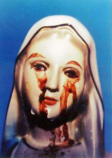
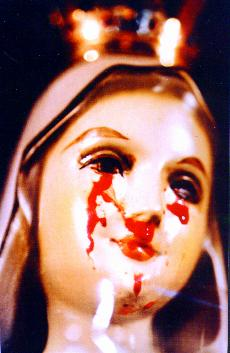
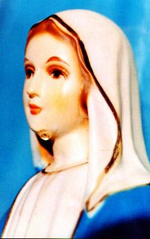

ACTUALIDAD - �En varios lugares del mundo, im�genes de NUESTRA SE�ORA
ACTUALIDAD - �En varios lugares del mundo, im�genes de NUESTRA SE�ORA  lloran!...�Pero, por qu� derraman l�grimas las im�genes
de nuestra MADRE BENDITA?
lloran!...�Pero, por qu� derraman l�grimas las im�genes
de nuestra MADRE BENDITA?ACTUALIDAD - �En varios lugares del mundo, im�genes de NUESTRA SE�ORA lloran!...�Pero, por qu� derraman l�grimas las im�genes
de nuestra MADRE BENDITA?
S�lo para recordar, en Akita, Jap�n, adem�s de los mensajes y ense�anzas que la VIRGEN MARIA transmiti� a la Religiosa Agnes en beneficio de nosotros, la peque�a imagen verti� copiosamente l�grimas de sangre; en la misma ocasi�n la imagen de NUESTRA SE�ORA ROSA M�STICA en Italia, llor� en varias oportunidades; y ahora en la Corea del Sur, la imagen de la VIRGEN MADRE SANT�SIMA, tambi�n llora muchas y espesas l�grimas... Y en esta oportunidad, af�n de que nadie ponga la duda y no hagan pensamientos mal�volos, durante m�s de 700 d�as la imagen derram� l�grimas y tambi�n l�grimas de sangre, en la presencia de las autoridades eclesi�sticas, de hombres, mujeres, ni�os y especialistas de todo las partes del mundo, que inclusive recogieron y examinaron la sangre y verificaron tratarse de sangre humano. Del 30 de junio de 1985 a diciembre de 1992, el mundo tuvo bastante tiempo a verificar que aquellas l�grimas eran verdaderas, que traduc�an un sentimiento de tristeza, debido a la conducta indigna de muchos de SUS ni�os.
�Pero, por qu� entonces nuestra MADRE SANT�SIMA llora y por qu� derrama l�grimas de sangre?
Fray Raymond
Spies, el director espiritual de Julia, con la imagen  vertiendo l�grimas
de sangre.
vertiendo l�grimas
de sangre.
SIGNIFICADO
DE LAS L�GRIMAS -
La humanidad no es en verdad esa preciosidad idealizada por el
CREADOR. Las debilidades dominan el coraz�n de las personas y
hacen con que en muchas oportunidades ellas hagan el mal que no
quieren practicar.
Sin embargo, no es absolutamente l�cito aceptar una situaci�n por m�s dif�cil que sea, sin reaccionar. No se puede dejar que las cosas ocurran, sin respeto a la buena moral de la familia y de la religi�n, sin que sea hecho una resistencia resuelta y corajosa. No se puede permitir que los hechos ocurran por acomodaci�n y conveniencia, buscando consolidar posiciones que son ef�meras, que no traen cualquier paz interior y cualquier ganancia para el esp�ritu.
Nosotros sabemos, que no es tarea f�cil a crear una fuerza contraria a combatir el mal cuando �l crece y de manera avasalladora incide sobre las almas, devastando y neutralizando el car�cter y la fe de las personas, porque siendo una potencia invisible, el mal a ser combatido eficazmente no s�lo pide persistencia y perseverancia de las personas, pero sobre todo, exige la ayuda Divina. Y a conseguirla, es necesario que tengan coraje y disposici�n a cultivar la amizad del SE�OR y en los momentos dif�ciles postrar humildemente de rodillas y invocar la ayuda indispensable de DIOS que en todas las ocasiones nunca queda sin escuchar nuestras solicitaciones. Esto porque sin ella, las personas no tienen medios de vencer a las fuerzas del mal.
En junio de 1987
la VIRGEN MARIA explic� delicadamente a Julia, las razones de SUS l�grimas:
"Mi estimada 
Debemos tener presente, que en verdad, NUESTRA SE�ORA es nuestra MADRE, que intercede cerca de DIOS en nuestro beneficio, y siempre alcanza las gracias que necesitamos a nuestra existencia.
De esa manera, si queremos aliviar un poco la intensidad del ego�smo personal y mirar en ELLA con la decisi�n de consolar SU INMACULADO CORAZ�N debido a los muchos pecados de la humanidad, reconociendo los beneficios innumerables que maternalmente ELLA consigue a nosotros sus hijos, con certeza cada persona ha de conseguir secar un poco de las preciosas l�grimas que salen de SU CORAZ�N SAGRADO y lleno de afecto.
FOTOGRAF�AS VIVAS
- Por esa raz�n, como memoria
inolvidable de nuestra MADRE SANT�SIMA, presentamos algunas fotos
impresionantes de las l�grimas de NUESTRA SE�ORA, a ser
grabadas en el interior del esp�ritu de sus hijos.
�No es razonable asumir una decisi�n y secar las l�grimas de NUESTRA MADRE?





ACEITE PERFUMADO
- Despu�s que la
imagen ces� de verter l�grimas, de su peque�ito cuerpo, principalmente
de la cabeza, sin que existiera cualquier agujero, sali� un precioso
aceite fragante que impregn� la Capilla entera de Naju con un olor
agradable y suave de rosas. Este fen�meno ocurri� hasta octubre
de 1994. Entonces cuando ces�, en los a�os siguientes incluso
a mediados de 1998, las personas que acompa�aron J�lia en la
oraci�n del Rosario, testificaran que tambi�n era com�n sentir
el mismo olor de rosas impregnar completamente el sal�n.
LAS RAZONES
DE NUESTRA MADRE - Con esta intervenci�n sensacional y digna del respeto
m�s grande y la veneraci�n de sus ni�os, la VIRGEN BENDITA
quiere despertar la humanidad del entumecimiento de la indiferencia, del
escepticismo, del marchitamiento espiritual y de la falta de sensibilidad
con las cosas del esp�ritu, estimulando las personas a practicar la
ense�anza del Evangelio y hacer revivir la tradicional fe cristiana. ELLA
quiere que nosotros empecemos a vivir una vida de oraci�n, en humildad,
con dedicado amor a DIOS y al pr�jimo, af�n de que podamos participar en
una nueva edad de armon�a y de paz en el Reino de CRISTO.